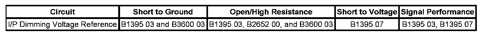

Lighting and Horns System
DTC B1395
DTC DESCRIPTOR
DTC B1395 03
Voltage Below Threshold
DTC B1395 07
Voltage Above Threshold
DIAGNOSTIC FAULT INFORMATION

Perform the Diagnostic System Check - Vehicle prior to using this diagnostic procedure. Initial Inspection and Diagnostic Overview
CIRCUIT/SYSTEM DESCRIPTION
Voltage for the interior backlighting components is supplied from the body control module (BCM). The BCM applies a voltage reference through the instrument panel (I/P) dimming voltage reference circuit to the interior lamp dimming switch, which is part of the headlamp switch. When the dimming switch is placed in the desired position, the dimmed voltage setting is applied from the interior lamp dimming switch through the I/P dimming control circuit to the BCM. The BCM then applies the dimmed voltage to the I/P lamps supply voltage circuit and they dim to the correct level.
CONDITIONS FOR RUNNING THE DTC
The ignition is ON.
CONDITIONS FOR SETTING THE DTC
B1395 03
The BCM detects a voltage that is lower than 0.33 volt on the I/P dimming voltage reference circuit.
B1395 07
The BCM detects a voltage that is greater than 4.97 volts on I/P dimming voltage reference circuit.
B3600 03
The BCM detects a voltage that is lower than 0.10 volt on the I/P dimming control circuit.
ACTION TAKEN WHEN THE DTC SETS
- The I/P lamps are dim or not illuminated.
- The I/P lamps will not dim.
CONDITIONS FOR CLEARING THE DTC
- The conditions for setting the DTC are no longer present.
- A history DTC clears after 100 malfunction-free ignition cycles.
- The BCM receives the clear code command from the scan tool.
CIRCUIT/SYSTEM VERIFICATION
Ignition ON, cover the ambient light sensor. Vary the interior lamp dimming switch from dim to full bright. The I/P lamps should dim and then become full bright.
CIRCUIT/SYSTEM TESTING
1. Clear the DTC.
2. Use a scan tool to monitor the Dimming Control Reference Signal data parameter in the BCM data list.
- If less than 0.33 volt, test the I/P dimming voltage reference circuit for a short to ground or an open/high resistance. If the circuit/connections test normal, replace the BCM.
- If greater than 4.97 volts, test the I/P dimming voltage reference circuit for a short to voltage. If the circuit/connections test normal, replace the BCM.
3. If the voltage is correct and all circuits/connections test normal, replace the headlamp switch.
REPAIR INSTRUCTIONS
Perform the Diagnostic Repair Verification after completing the diagnostic procedure.
- Headlamp Switch Replacement
- Control Module References for BCM replacement, setup, and programming. Verification Tests Programming and Relearning